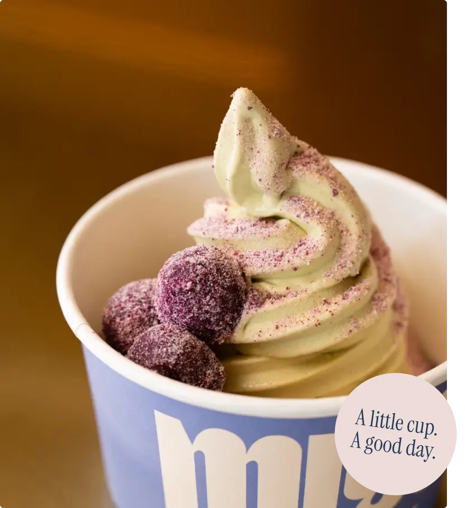
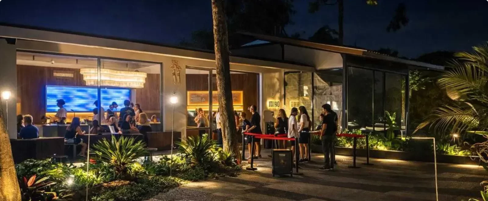

01 The vessel
It starts
with a cup.
A chilled MIYO cup waits under the nozzle. Just space, and a little anticipation.
Chilled cup
A short film
Scroll to build the cup — cold swirl, strawberries, mango, pistachio crumble, and a slow ribbon of honey.
01 The vessel
A chilled MIYO cup waits under the nozzle. Just space, and a little anticipation.
Chilled cup
02 The swirl
Cold frozen yogurt spirals in, thick and slow, stacking into a soft peak.
Frozen yogurt
03 Strawberries
Hand-cut berries settle into the sides — sharp, red, and bright against all that white.
Strawberry
04 Mango
Golden blocks of ripe mango drop in, filling the gaps around the peak.
Mango
05 Pistachio crumble
Crushed pistachios and oat crumble shower down, catching on the fruit for crunch in every spoon.
Pistachio · Oat crumble
06 Honey
A thin stream glosses the fruit, pools at the rim, and starts to fall.
Wildflower honey
07 The finish
Eight seconds, one cup, built layer by layer. It only needs a spoon now.
MIYO · Pererenan
Frozen yogurt · Pererenan, Bali
Your favourite frozen yogurt moment in the heart of Pererenan, Bali

02 The flavours
Six flavours. Your kind of good mood. Start with a favourite, or make room for something new.
Colour studies, not product photographs. Ask in store for today's flavour availability.
03 Word of mouth
Thus far the best fro-yo I had!
First time trying MIYO, and I was genuinely impressed!
The entire store was spotless and very well maintained.
04 The MIYO moment
A look around our little corner of Pererenan. Stay a while.

Room for a pause.
And a little more.
MIYO, Pererenan · Bali
05 Visit us
Your Froyo Bali moment starts right here. Come by, find your flavour and settle in.
Find our little corner
Jl. Pantai Pererenan No.99, Pererenan, Bali 80361, Indonesia
From 3:00 PM · Check today's hours
See Google Maps for current opening hours.